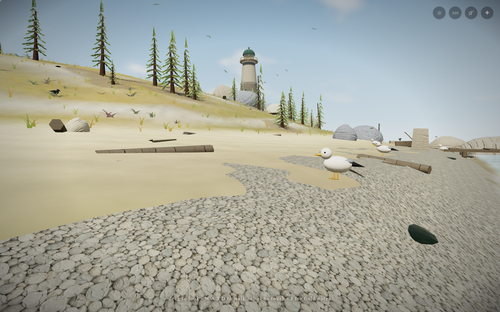
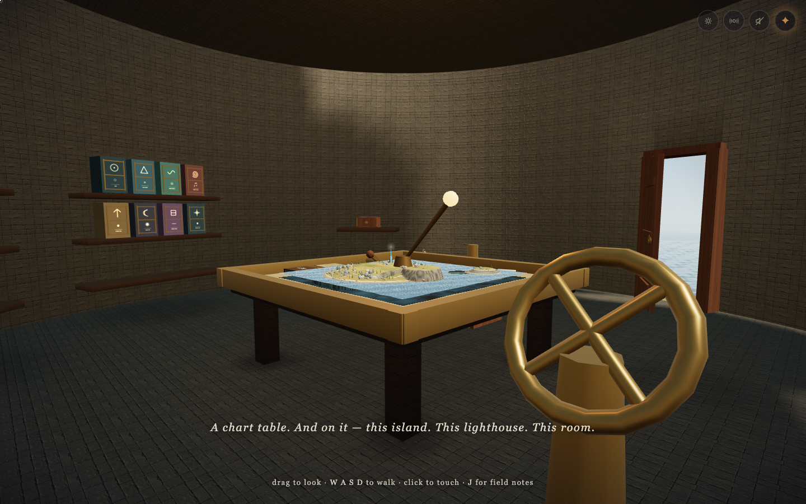
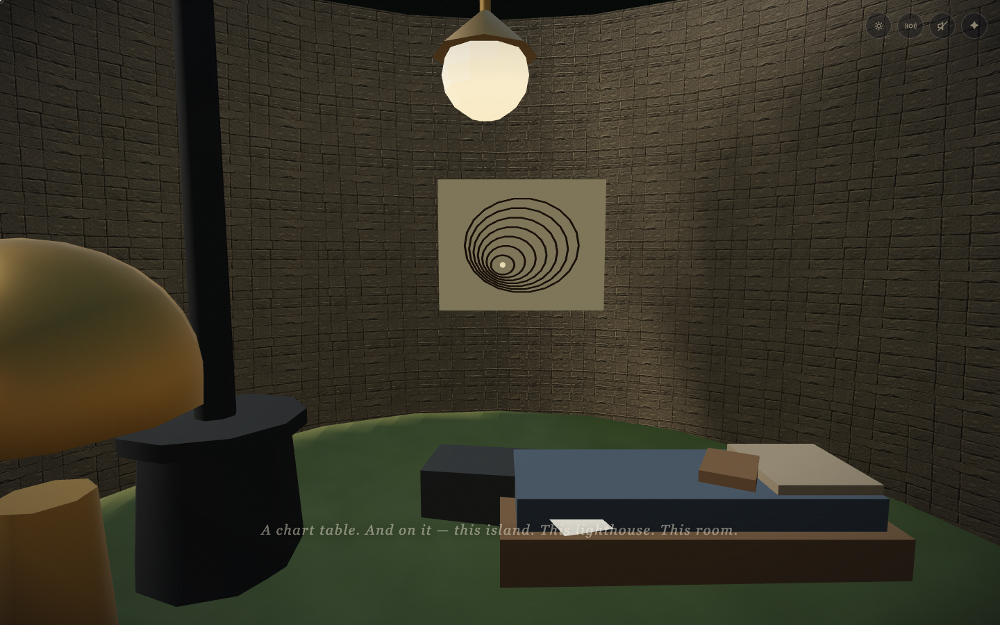
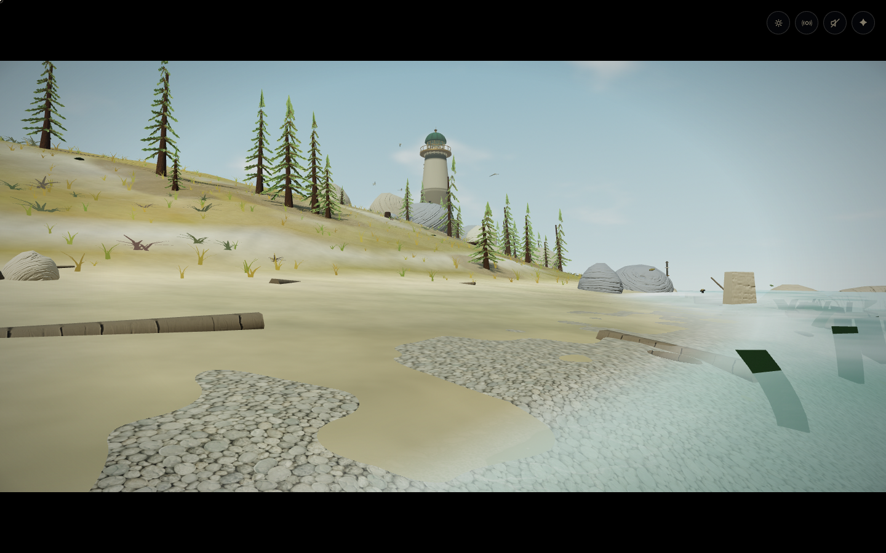
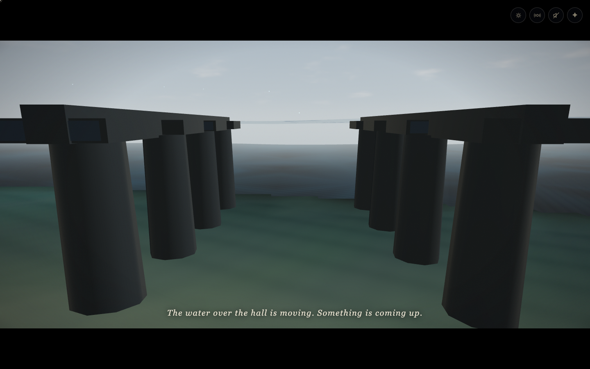
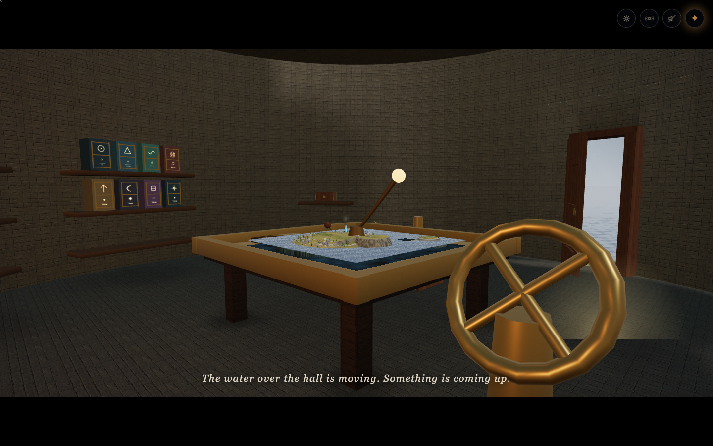

Six diagnostic scene fixtures from the original build. The original full route could not pass its first return: return.receiver was unreachable, and the refuge doorway had an outdated collision lock.
These are scene comparisons, not a claimed completed playthrough of the old build. Original manuscript · Fixture data.





